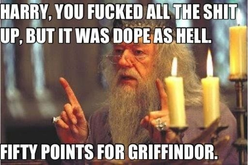
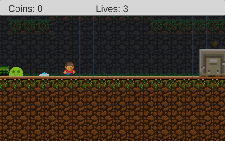
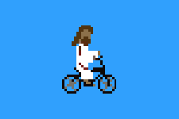

|  |
Untitled 4 a collaborative project.
I was approached at a fundraiser for TAG and met Russell, he makes music and has a love for the old 8-bit era of games. He offered a few tracks to inspire some mini-games based on the track. I think it's curious we don't have music games in the style of music videos, this is the first game made in this series.
Play Untitled 4
|
|
|  |
Color Coded Lesson
A tech demo for teaching a Unity 3D workshop for TAG Labs (I do a lot of work with them) and Color Coded DC. I made in editor tools for Unity with the goal that people not familiar with scripting or Unity 3D could work on building a game and get a skin deep dive into game design. Ultimately I don't think I made a great tool for it but learned a great deal about customizing the Unity editor for projects.
Play Game
Github source code (good for seeing the editor tools)
|
|
|  |
Christ on A Bike a goofy project.
This was a general purpose exclamation in my household. I thought it was more common but friends have informed me it's the first they've heard. *Shrug* Blatant rip-off of Robot Unicorn Attack on Adult Swim. It's a joke game friends, we have fun here.
Play Christ on A Bike
|
|
|
Abolido, El Juego de la Paz.
A game made in collaboration with Spark Media, the game is inspired by the historic abolition of the Costa Rican Armed Forces and the iconic image forever attached to the event: Costa Rica’s visionary leader and President, Don Pepe, using a sledge hammer to knock down the walls of the country’s military headquarters, the Cuartel Bellavista on December 1st, 1948. First contract game made.
Abolido Play Store (Android)
Abolido App Store (iOS)
|
|
 |
The Search for Harmony
A game made in collaboration with Spark Media, The Search for Harmony is a new web-based game about the rich – and forgotten – historical legacy of classical musicians of African descent.
Project Page
|
|